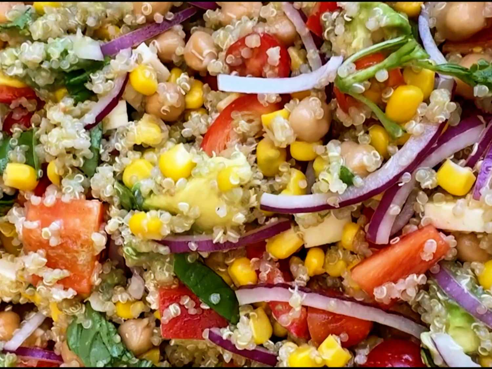

This salad is never soggy! Packed with quinoa , corn, white beans ,fresh tomatoes and bell pepper ,it holds up beautifully at barbecues ,picmics and potlucks
For dressing , whisk lime juice ,olive oil, honey ,and Dijon mustard together in a large bowl
Season with salt and pepper
Add quinoa,corn , tomatoes, bell papper , onion , chickpeas,feta, avocado and basil to the same bowl . stir to continue with dressing